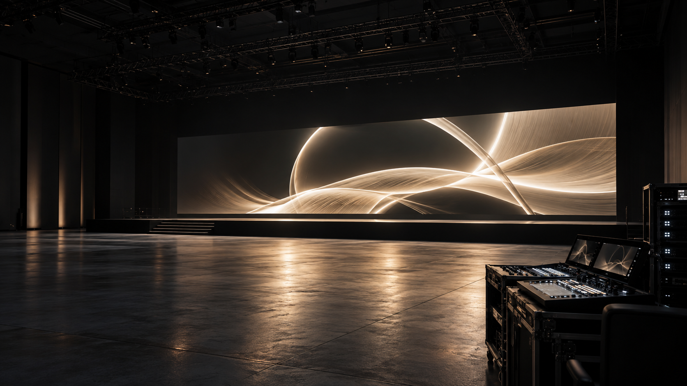

理解を深める
登壇者・資料・デモ映像の見せ分けで、説明の要点を追いやすく。
ホーム / 用途から考える
APPLICATION GUIDE
来場者に何を届けたいか。その目的に合わせて、画面・素材・操作の役割を整理するためのガイドです。

PRESENTATION ・ 発表会・カンファレンス
登壇資料や紹介映像が、会場のどの位置から見えるか。プログラムの進行に沿って、画面と操作の役割を考えます。

PURPOSE → EXPERIENCE → NEXT ACTION
新製品を理解してもらう。問い合わせや商談へ進んでもらう。会場で終わらず、アーカイブから次の接点をつくる。
登壇者・資料・デモ映像の見せ分けで、説明の要点を追いやすく。
資料請求や相談先の案内を、終了時の画面や配信概要欄に。
収録・字幕・公開許諾を事前に整理し、後日の発信に使える素材を計画。
参加数・視聴完了率・アンケートの理解度・資料請求・商談化を、開催目的に合わせて選びます。売上との関係を見る場合は、対象期間と流入経路もそろえます。
企画時に選ぶ評価指標の例です。成果や数値の達成を保証するものではありません。
主催者・関係企業が公開した参考事例です。LOTUS VISUALの担当実績とは別に、企画の視点として紹介します。
LinkedIn公式の事例資料では、Dreamforce 2023の施策で340万回の視聴、5分以上視聴した人46,500人超を報告。広告配信やターゲティングを含む取り組みの結果で、映像設備だけの効果や売上を示す数値ではありません。
LinkedIn公式・Dreamforce事例資料 ↗EXHIBITION ・ 展示会・展示空間
来場者との距離や、立ち止まって見る時間。空間の使われ方を踏まえて、画面サイズと映す内容を考えます。

PURPOSE → EXPERIENCE → NEXT ACTION
通路からの認知、商品の理解、説明員との会話。映像を置く目的を分けて、ブースで起こしたい行動へつなげます。
短い映像と読み取れる言葉で、何を紹介している場所かを伝える。
製品の動きや導入場面を見せ、説明員が会話に使える画面を用意。
製品ページや資料請求への導線を整え、追って説明できる接点をつくる。
通過者に対する立ち寄り、滞在時間、名刺・問い合わせ、商談数、受注を区別して記録します。出展費用と得られた商談の質を合わせて振り返ります。
企画時に選ぶ評価指標の例です。成果や数値の達成を保証するものではありません。
主催者・関係企業が公開した参考事例です。LOTUS VISUALの担当実績とは別に、企画の視点として紹介します。
主催者が公表した独立監査では、来場者142,465人、出展者4,500超。出会える相手の規模を示す例で、映像設備による売上増を示した数値ではありません。
CES公式・2025年監査 ↗STAGE VISUAL ・ ステージ・ライブ
舞台上の動きや演出のタイミングに合わせて、どの画面に何を映すか。本番の流れと映像の役割を共有します。

PURPOSE → EXPERIENCE → NEXT ACTION
その場の観客体験と、終演後にもう一度見たくなる接点。演出の映像と発信用の収録を分けて計画します。
観客の位置と画面の役割を整理し、演出・進行と映像のタイミングを合わせる。
撮影可否や権利条件を先に決め、告知やSNSに使える素材の範囲を整理。
公式アカウント・チャンネル・次回公演の案内先を用意し、余韻から次の行動へ。
来場・満足度に加え、公式動画の視聴、SNSの保存・共有、フォロワー・チャンネル登録、次回告知への反応を分けて確認します。映像だけによる増加と決めつけず、告知や演目などの条件も記録します。
企画時に選ぶ評価指標の例です。成果や数値の達成を保証するものではありません。
主催者・関係企業が公開した参考事例です。LOTUS VISUALの担当実績とは別に、企画の視点として紹介します。
TikTok公式は2025年のNYC公演の本配信と再配信を合わせて230万超の視聴を報告。約6万人のフォロワー増はアルバム発売以降の集計で、ライブ単体の効果とは分けて読む必要があります。
TikTok公式 ↗EYと主催者のレポートでは、Ahmedabadの2公演による経済効果を推計641 croreインドルピーとしています。観光・宿泊などを含む地域への推計で、制作会社の売上やLED単体の効果ではありません。
EY公式・2025年4月 ↗